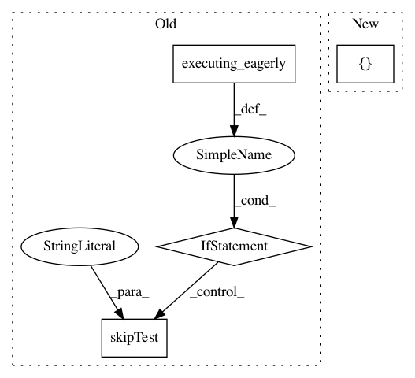

3b521b119ca98223f913bf4a6e6044beaef64e7e,tf_agents/networks/q_rnn_network_test.py,QRnnNetworkTest,test_network_can_preprocess_and_combine,#QRnnNetworkTest#,47
Before Change
self.assertEqual((1, 40), state[1].shape)
def test_network_can_preprocess_and_combine(self):
if tf.executing_eagerly():
self.skipTest("b/123776211")
batch_size = 3
frames = 5
num_actions = 2
lstm_size = 6
After Change
action_spec=tensor_spec.BoundedTensorSpec(
[1], tf.int32, 0, num_actions - 1))
empty_step_type = tf.constant(
[[time_step.StepType.FIRST] * frames] * batch_size)
q_values, _ = network(states, empty_step_type)
self.assertAllEqual(
q_values.shape.as_list(), [batch_size, frames, num_actions])
In pattern: SUPERPATTERN
Frequency: 3
Non-data size: 4
Instances
Project Name: tensorflow/agents
Commit Name: 3b521b119ca98223f913bf4a6e6044beaef64e7e
Time: 2019-02-19
Author: oars@google.com
File Name: tf_agents/networks/q_rnn_network_test.py
Class Name: QRnnNetworkTest
Method Name: test_network_can_preprocess_and_combine
Project Name: tensorflow/agents
Commit Name: 58c7a5fdb01359ffb2cefcda9350aa65a0907eb5
Time: 2019-05-29
Author: ebrevdo@google.com
File Name: tf_agents/policies/policy_saver_test.py
Class Name: PolicySaverTest
Method Name: testTrainStepSaved
Project Name: tensorflow/agents
Commit Name: 694b2e53a79a020db8d48bb2ced4ab80d0cb962b
Time: 2019-08-19
Author: oars@google.com
File Name: tf_agents/drivers/dynamic_episode_driver_test.py
Class Name: DynamicEpisodeDriverTest
Method Name: testOneStepUpdatesObservers